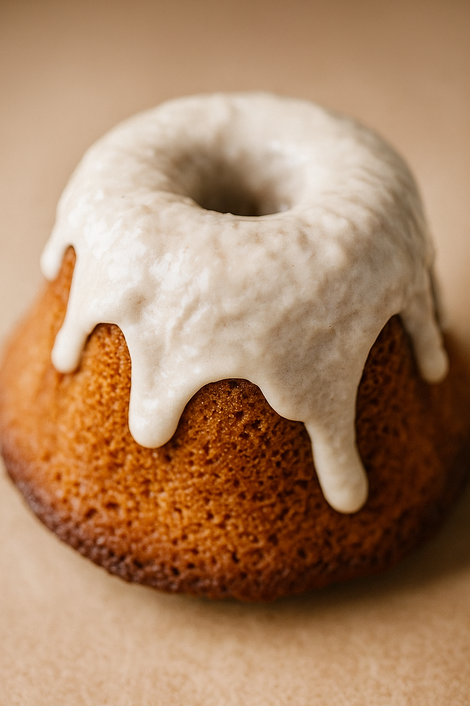

Sweetrolls Recipe

Description
The Sweetroll is a soft, golden sponge cake with a moist, tender crumb, crowned with a thick layer of vanilla glaze that cascades down the sides like fresh snowfall, delivering a perfect bite of comfort and decadence—if you're lucky enough to get one before the guards do.
Ingredients
- Warm Milk
- Honey
- Salt
- Dry Active Yeast
- Butter
- Eggs
- Cream Cheese
- Unsalted Butter
- Heavy Cream
- Flour
- Powdered Sugar
Steps
- Set your oven to 350°F (175°C).
- In a bowl, mix warm milk and honey until the honey dissolves.
- In a bowl, mix warm milk and honey until the honey dissolves.
- Add the an egg, butter and flour to the bowl.
- Stir or mix until you have a smooth, lump-free batter.
- Spoon the batter evenly into a 5-inch miniature bundt pan (or multiple small molds).
- Cover the pan and allow the batter to rise for 30 minutes in a warm place.
- Bake in the preheated oven for 15 minutes, or until lightly golden and a toothpick comes out clean.
- In a mixing bowl, beat together the cream cheese, butter, and powdered sugar until smooth.
- Gradually add heavy cream, a little at a time, until you have a thick, pourable icing that slowly runs off a spoon.
- Once baked, let the sweetrolls rest in the pan for 5 minutes.
- Then gently remove them and place on a wire rack to cool completely.
- Once fully cooled, spoon the icing over the tops of the rolls, allowing it to drizzle slightly down the sides.
Odin Recipes